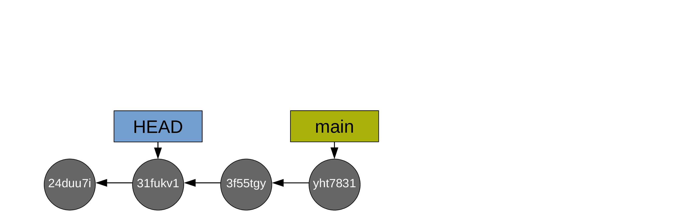

Getting info on the commit history
Displaying the commit history
So far, we have created 5 commits. To display them, you use the command git log:
git logcommit a1df8e56ad45ddd514ff951f2d65e4e1d40a641c (HEAD -> main)
Author: Marie-Helene Burle <xxx@xxx>
Date: Mon Oct 3 22:57:59 2022 -0700
Add .gitignore file with data and results
commit a049a2f6834801bf76fa3c2c191a59a3ec589d6e
Author: Marie-Helene Burle <xxx@xxx>
Date: Mon Oct 3 21:17:23 2022 -0700
Define the variable a in R script
commit c7fc9c1743d8a40c3f72d9450b9440dca1cb5922
Author: Marie-Helene Burle <xxx@xxx>
Date: Mon Oct 3 21:16:43 2022 -0700
Add conclusion to the manuscript
commit 451c47b386895b8b0b5bdd1a8734ef1d51f9ccc9
Author: Marie-Helene Burle <xxx@xxx>
Date: Mon Oct 3 18:35:51 2022 -0700
Add result section to manuscript
commit 24duu7id631a7390a910fa13cd4954cf9e8a3061
Author: Marie-Helene Burle <xxx@xxx>
Date: Mon Oct 3 18:19:28 2022 -0700
Initial commitAs you can see, commits are listed from the bottom up. You can customize the output of git log by playing with the many existing flags (you can run man git-log to get the list of all flags).
For instance, you can display each commit as a one-liner:
git log --onelinea1df8e5 (HEAD -> main) Add .gitignore file with data and results
a049a2f Define the variable a in R script
c7fc9c1 Add conclusion to the manuscript
451c47b Add result section to manuscript
24duu7i Initial commitYou can display it as a graph:
git log --graph* commit a1df8e56ad45ddd514ff951f2d65e4e1d40a641c (HEAD -> main)
| Author: Marie-Helene Burle <xxx@xxx>
| Date: Mon Oct 3 22:57:59 2022 -0700
|
| Add .gitignore file with data and results
|
* commit a049a2f6834801bf76fa3c2c191a59a3ec589d6e
| Author: Marie-Helene Burle <xxx@xxx>
| Date: Mon Oct 3 21:17:23 2022 -0700
|
| Define the variable a in R script
|
* commit c7fc9c1743d8a40c3f72d9450b9440dca1cb5922
| Author: Marie-Helene Burle <xxx@xxx>
| Date: Mon Oct 3 21:16:43 2022 -0700
|
| Add conclusion to the manuscript
|
* commit 451c47b386895b8b0b5bdd1a8734ef1d51f9ccc9
| Author: Marie-Helene Burle <xxx@xxx>
| Date: Mon Oct 3 18:35:51 2022 -0700
|
| Add result section to manuscript
|
* commit 24duu7id631a7390a910fa13cd4954cf9e8a3061
Author: Marie-Helene Burle <xxx@xxx>
Date: Mon Oct 3 18:19:28 2022 -0700
Initial commitHere is an example of more complex customization:
git log \
--graph \
--date=short \
--pretty=format:'%C(cyan)%h %C(blue)%ar %C(auto)%d'`
`'%C(yellow)%s%+b %C(magenta)%ae'* a1df8e5 88 seconds ago (HEAD -> main)Add .gitignore file with data and results xxx@xxx
* a049a2f 2 hours ago Define the variable a in R script xxx@xxx
* c7fc9c1 2 hours ago Add conclusion to the manuscript xxx@xxx
* 451c47b 4 hours ago Add result section to manuscript xxx@xxx
* 24duu7i 5 hours ago Initial commit xxx@xxxGetting information about a commit
git log is useful to get an overview of our project history, but the information we get about each commit is limited. To get additional information about a particular commit, you can use git show followed by the hash of the commit you are interested about.
For instance, let’s explore our second commit:
git show 451c47b # Replace the hash by the hash of your second commitcommit 451c47b386895b8b0b5bdd1a8734ef1d51f9ccc9 (HEAD -> main)
Author: Marie-Helene Burle <xxx@xxx>
Date: Mon Oct 3 18:35:51 2022 -0700
Add result section to manuscript
diff --git a/ms/chapter3.md b/ms/chapter3.md
index b88424b..9408f32 100644
--- a/ms/chapter3.md
+++ b/ms/chapter3.md
@@ -7,3 +7,7 @@ Bla bla bla bla bla.
## Methods
Bla bla bla.
+
+## Results
+
+We now have a bunch of results in our markdown manuscript.In addition to displaying the commit metadata, this also displays the difference with the previous commit.
Revisiting old commits
The pointer HEAD, which normally points to the branch main which itself points to latest commit, can be moved around. By moving HEAD to any commit, you can revisit the state of your project at that particular version.
The command for this is git checkout followed by the hash of the commit you want to revisit.
For instance, we could revisit the first commit in our example with:
git checkout 24duu7i # Replace the hash by the hash of your first commitNote: switching to '24duu7i'.
You are in 'detached HEAD' state. You can look around, make experimental
changes and commit them, and you can discard any commits you make in this
state without impacting any branches by switching back to a branch.
If you want to create a new branch to retain commits you create, you may
do so (now or later) by using -c with the switch command. Example:
git switch -c <new-branch-name>
Or undo this operation with:
git switch -
Turn off this advice by setting config variable advice.detachedHead to false
HEAD is now at 24duu7i Initial commitThis is the same as the command git switch --detach 24duu7i: git switch is a command introduced a few years ago because git checkout can be used for many things in Git and it was confusing many users. git switch allows to switch from one branch to another or, with the --detach flag, to switch to a commit as is the case here.
Once you have seen what you wanted to see, you can go back to your branch main with:
git checkout mainPrevious HEAD position was 24duu7i Initial commit
Switched to branch 'main'This is the same as the command git switch main.
Be careful not to forget to go back to your branch main before making changes to your project. If you want to move the project to a new direction from some old commit, you need to create a new branch before doing so. When HEAD points directly to a commit (and not to a branch), this is called “Detached HEAD” and it is not a position from which you want to modify the project.
It is totally fine to move HEAD around and have it point directly to a commit (instead of a branch) as long as you are only looking at a version of your project and get back to a branch before doing some work:

